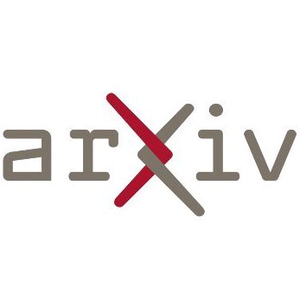
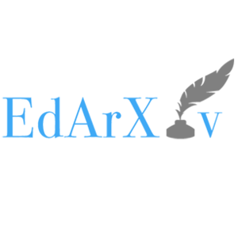
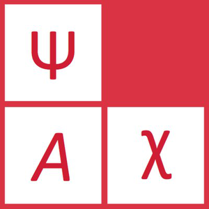
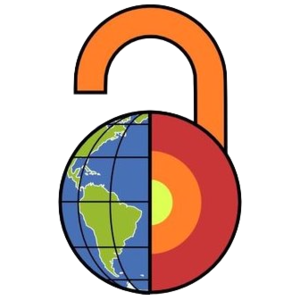

Professional Skills: Open Research
Key Concepts

Reproducibility

via the Turing Way
Error Detection

An analysis by Nuijten et al. (2016) of over 250K p-values reported in 8 major psych journals from 1985 to 2013 found that:
- half the papers had at least one inconsistent p-value
- 1/8 of papers had errors that could affect conclusions
- errors more likely to be erroneously significant than not
Code Reproducibility
Of 62 Registered Reports in psychology published from 2014–2018, 36 had data and analysis code, 31 could be run, and 21 reproduced all the main results (Obels et al, 2020)

Open Access

Can be funded via Grant Funding or Publisher Agreements (contact research-openaccess@glasgow.ac.uk)
Open Materials/Data/Code

Ideally, give open materials a permanent reference, like a DOI.
Preprints





Next Steps
- Read Easing into Open Science
- Get an ORCiD
- Ask your supervisor about open research practices and tools in your areas
- Think about open research (especially open data) in the planning stages

Thank You!